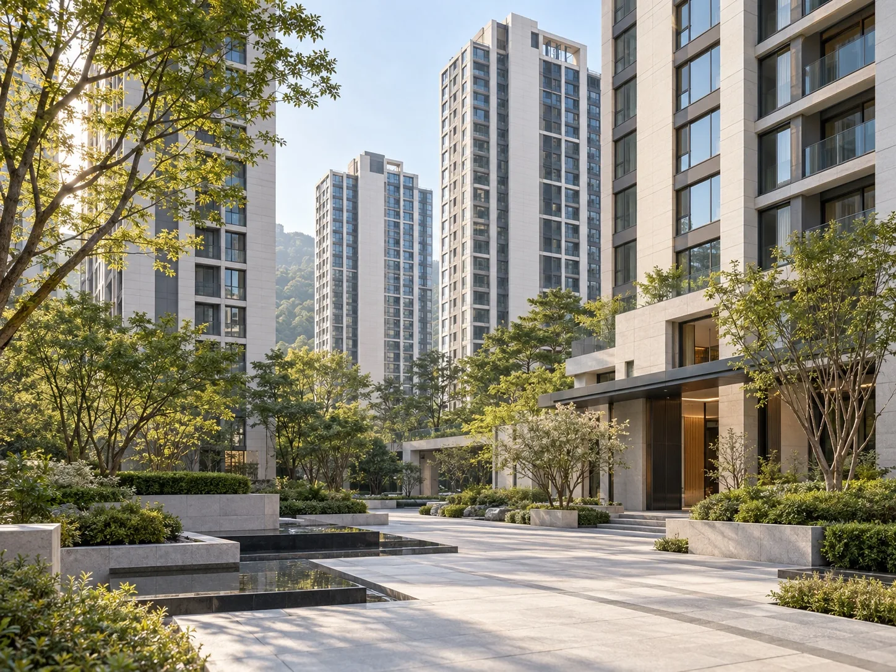
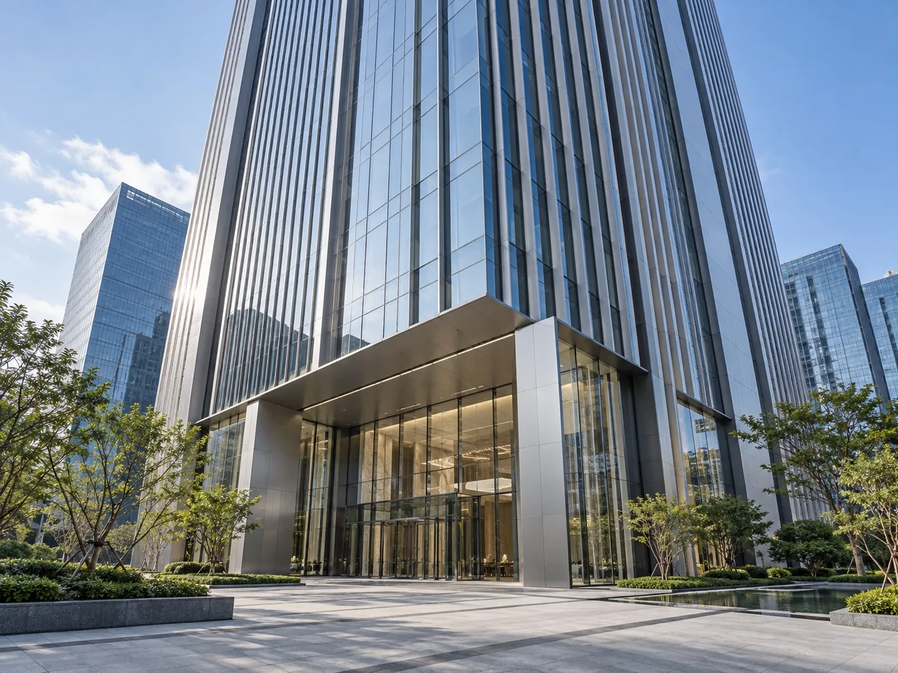
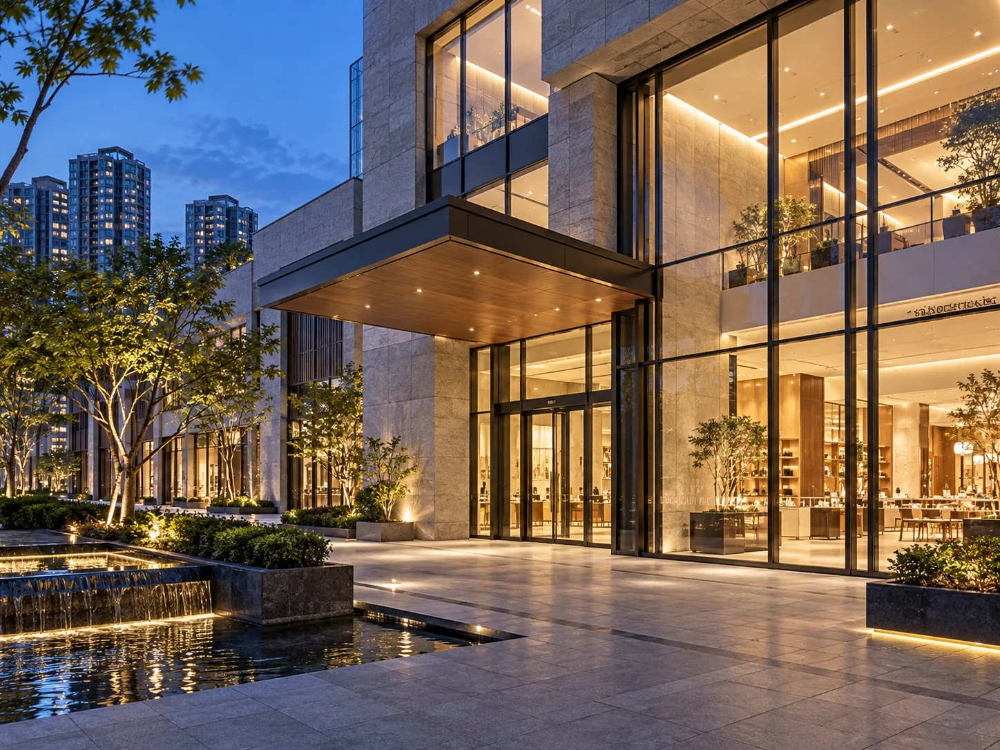

구일엘리베이터 · 관리대상
건물 용도에 맞춘 승강기 관리
공동주택부터 업무시설·상업시설까지, 건물의 운행 조건을 확인합니다.
서울·경기 지역 건물의 운행 시간, 이용 인원, 설비 상태를 확인하고 점검 일정과 관리 범위를 협의합니다.

01 · 주거 공간
공동주택
아파트·오피스텔 등 주거시설의 승강기 이용 빈도와 설비 상태를 확인합니다.
- 승강기 대수와 기종, 운행 조건
- 반복 고장과 기존 점검·부품 교체 기록
- 건물 관리 일정에 따른 점검 계획

02 · 업무 공간
업무시설
사무실·업무용 건물의 운영 시간과 이용 조건을 살펴보고 점검 일정을 협의합니다.
- 업무 시간과 승강기 이용 인원
- 기존 설비 상태와 점검·고장 이력
- 점검 또는 공사를 진행할 수 있는 시간

03 · 상업 공간
상업시설
매장·상업용 건물의 이용 환경과 운행 시간을 확인해 필요한 점검 항목을 검토합니다.
- 영업시간과 승강기 운행 조건
- 이용 환경에 따른 점검 항목
- 보수·교체공사가 필요한 설비 상태
위 항목은 상담 가능한 건물 유형 안내이며, 실제 시공실적을 나타내지 않습니다.
건물 정보를 알려주시면 관리 범위를 상담합니다.
건물 주소, 승강기 대수와 기종, 현재 관리 상황을 함께 알려주세요.